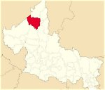
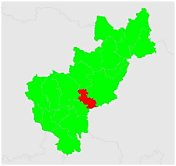
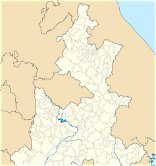
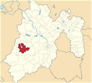
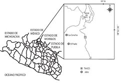
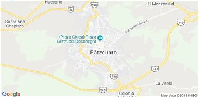
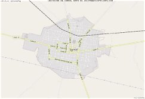
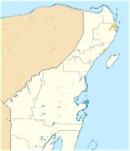

| Nombre | Descripción | Número de habitantes (aprox.) | Mapa |
|---|---|---|---|
| Real de Catorce, San Luis Potosí | Antiguo pueblo minero en el desierto, famoso por su túnel de acceso y por ser lugar sagrado del pueblo wixárika. | 9,000 |  |
| Bernal, Querétaro | Pueblo famoso por la Peña de Bernal, uno de los monolitos más grandes del mundo, y por sus dulces y tejidos. | 4,000 |  |
| Cuetzalan, Puebla | Pueblo de montaña con casas de teja, neblina, mercado indígena y la cascada Las Brisas. | 49,000 |  |
| Valle de Bravo, Estado de México | Pueblo a orillas de una presa, ideal para velear, volar en parapente y ver la migración de la mariposa monarca. | 66,000 |  |
| Taxco, Guerrero | Ciudad colonial de calles empinadas y casas blancas, conocida mundialmente por su trabajo en plata. | 105,000 |  |
| Pátzcuaro, Michoacán | Pueblo junto al lago de Pátzcuaro, con arquitectura colonial y tradiciones muy vivas en el Día de Muertos. | 95,000 |  |
| Izamal, Yucatán | Llamado "la ciudad amarilla" porque sus edificios están pintados de ese color; tiene un convento franciscano sobre una pirámide maya. | 29,000 |  |
| Bacalar, Quintana Roo | Pueblo junto a la Laguna de los Siete Colores, conocida por sus tonos de azul y sus estromatolitos. | 41,000 |  |